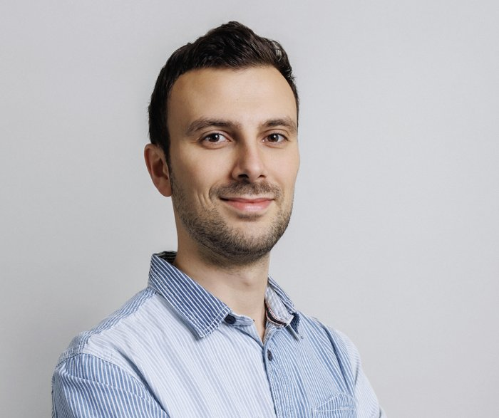

Viktor Gradoux
PhD candidate in Economics, University of Lausanne (HEC)
I am a PhD candidate in Economics at the University of Lausanne, supervised by Kenza Benhima (UNIL) and Sylvia Kaufmann (Study Center Gerzensee). I am also a scientific collaborator at the Swiss Institute of Applied Economics (CREA), where I build macroeconomic forecasting models for Switzerland.
My research lies at the intersection of international macroeconomics and finance, energy and geoeconomics. I combine high-frequency and narrative identification with structural time-series methods to trace how financial and geopolitical shocks propagate through the global economy, and I work on the time-series toolkit itself.
Before my PhD, I was a research trainee at the European Central Bank and at the National Bank of Romania, and an economic consultant intern at Panthéon Recherche. I hold a dual master’s degree in Economics and Business Administration from HEC Lausanne and completed the Swiss Program for Beginning Doctoral Students in Economics at Study Center Gerzensee.
I am also the author of the textbook L’Économie en 60 graphiques (Dunod, 2nd edition), regularly among the top ten economics books for students in France.

University of Lausanne, Internef
1015 Lausanne, Switzerland
Latest working paper, October 2026
Oil Shipping and Pirates
The Macroeconomic Effects of Oil Tanker Attacks
With Julian Marcoux. Attacks on oil tankers raise the cost of shipping oil, lower activity and raise prices in the United States and the world economy, through port congestion, lower crude imports and higher fuel prices.